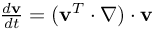
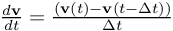
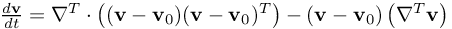

Simulate with complex geometries and complex physics
FLIQUID_ConsistentPressure_Version
version how to compute the consistent pressure (UCV)
FLIQUID_ConsistentPressure_Version = 2111 # deprecated, see AlternativeDPA
FLIQUID_ConsistentPressure_Version = 1127 # use this instead
| option | description |
|---|---|
| first digit | Version of how to compute the consistent dynamic pressure, cf. DynamicPressureAlgorithm. |
| Version 1: div((1/rho)*grad_p) = ... see ClassicalDPA | |
| Version 2: sum( W_ij*(p_j-p_i) ) = ... see AlternativeDPA | |
| Version 3: experimental, do not use. | |
Version 4: dynamic pressure is not computed (i.e. it remains what is there from the step  with denoting the correction pressure in the Chorin (v--) or penalty (vp-) formulation with denoting the correction pressure in the Chorin (v--) or penalty (vp-) formulation | |
| second digit | Version how to compute the acceleration. |
| Version 1:  -> quasistationary approach | |
| Version 2:  -> dynamic approach | |
| Version 3:  -> local quasistationary approach with chain rule in order to isolate the div(v)-part. The reference system is travelling with the speed of the local MESHFREE point. | |
| third digit | Version how to compute PSI, see ComputationOfPSI. |
| Version 1: div(div(eta*grad(v))) | |
| Version 2: divBAR(div(eta*grad(v))) | |
| fourth digit | Version how to compute PHI. |
| There are 8 variations, see ComputationOfPHI. This option makes sense only in case of the ClassicalDPA. In case of AlternativeDPA, keep this value at 1. |
- regularization of the pressure system is requested by RegularizeDPA. Here, it impacts the way the target pressure gradient is computed.
- version 4 or 8 is used for ComputationOfPHI (fourth digit).
- %BND_none% is used as a boundary condition, as this condition is based on the AlternativeDPA-algorithm, and so this digit impacts the computation of the target pressure gradient.
| useful options | characteristics of the numerical results |
|---|---|
| FLIQUID_ConsistentPressure_Version = 1111 (classical approach) | %BND_none% only valid in quasistationary boundaries |
| FLIQUID_ConsistentPressure_Version = 1127 (same as 2111) | very smooth results, also here %BND_none% only valid in quasistationary boundaries |
| FLIQUID_ConsistentPressure_Version = 1227 | %BND_none% valid in any case, as accelerations are computed exactly. However, the results might be noisy. |
| FLIQUID_ConsistentPressure_Version = 1327 | %BND_none% valid in any case. However, accelerations are computed on a local quasistationary approach (each point forms an observer coordinate system). These values might be less precise than 1227, the results however are more smooth. |
| FLIQUID_ConsistentPressure_Version = 1228 | Numerically most natural, as the acceleration is given by the finite temporal difference of the previous and current velocities, and PHI is the divergence of this term. However, it produces more noises in the pressure solution. |
- at a fixed location of an observer, the physical quantities only slowly change in time.
- watercrossing with fixed pool and moving car IS NOT quasistationary, because an observer standing in the pool will notice dramatic changes as the car drives by.
- watercrossing with fixed car and moving pool IS INDEED quasistationary, because the observer in the car will see slow changes of the water motion as the car constanty drives through the pool.
| This item is referenced in: | |
|---|---|
| common_variables | Local flow resistance due to block of porous material: common_variables.dat |
| common_variables | Local flow resistance due to block of anisotropic porous material: common_variables.dat |
| NonQuasiStationary | various instances of simple box driving through a channel of water, apply differnt pressure BC at each instance |
| common_variables | simple box driving through a channel of water: common_variables.dat |
| QuasiStationary | various instances of simple box driving through a channel of water, apply differnt pressure BC at each instance |
| common_variables | simple box driving through a channel of water: common_variables.dat |
| common_variables | CleaningJet: Letters getting washed away by a water jet : common_variables.dat |
| common_variables | Coating: Letters getting coated with enamel : common_variables.dat |
| common_variables | Melting: Letters melting in two different ways : common_variables.dat |
| common_variables | Rolling: Letters getting flattened by a rolling pin : common_variables.dat |
| common_variables | Spray: Letters getting sprayed with paint : common_variables.dat |
| common_variables | Melting: Letters swelling like bread : common_variables.dat |
| common_variables | Melting: Letters swelling like muffins : common_variables.dat |
| common_variables | flow in a Y-piece: common_variables.dat |
| common_variables | TUTORIAL 1: flow in a simple tube: common_variables.dat |
| common_variables | formation of a free jet: common_variables.dat |
| common_variables | TUTORIAL 3: flow in open channel with obstacle: common_variables.dat |
| common_variables | TUTORIAL 4: flow around a cylinder with local refinement: common_variables.dat |
| common_variables | TUTORIAL 4b: flow around a cylinder with local refinement (geometry-based): common_variables.dat |
| common_variables | TUTORIAL 5: flow around a MOVING cylinder with MOVING local refinement: common_variables.dat |
| common_variables | TUTORIAL 6: flow around a periodically moving cylinder: common_variables.dat |
| common_variables | TUTORIAL 7: boiling flow in a bowl: common_variables.dat |
| common_variables | TUTORIAL 8: simple pressing process: common_variables.dat |
| common_variables | TUTORIAL 9: simple floating process: common_variables.dat |
| common_variables | TUTORIAL 10: simple rolling process: common_variables.dat |
| %ind_DarcyVersion% | How to compute the source terms of the Darcy contributions in the pressure equations |
| FLIQUID_ConsistentPressure_Version | version how to compute the consistent pressure (CV) |
| MASS_correction_DivergenceVelocity | Mass Correction for weakly compressible flow problems |
| FLIQUID_ConsistentPressure_Version | version how to compute the consistent pressure (UCVO) |
| FLIQUID_ConsistentPressure_Version | version how to compute the consistent pressure (UCV) |
| %BND_none% | treat the boundary point as if it would be an interior point |
| Beta | Release notes for the MESHFREE beta executables |
| Stable | Release notes for the MESHFREE stable executables |
| ClassicalDPA | compute the dynamic(consistent) pressure as a (postprocessing) result to the current velocity field |
| ComputationOfPHI | how to numericall compute the source term that goes with intertial forces |
| AlternativeDPA | compute the consistent pressure as a (postprocessing) result to the current velocity field |